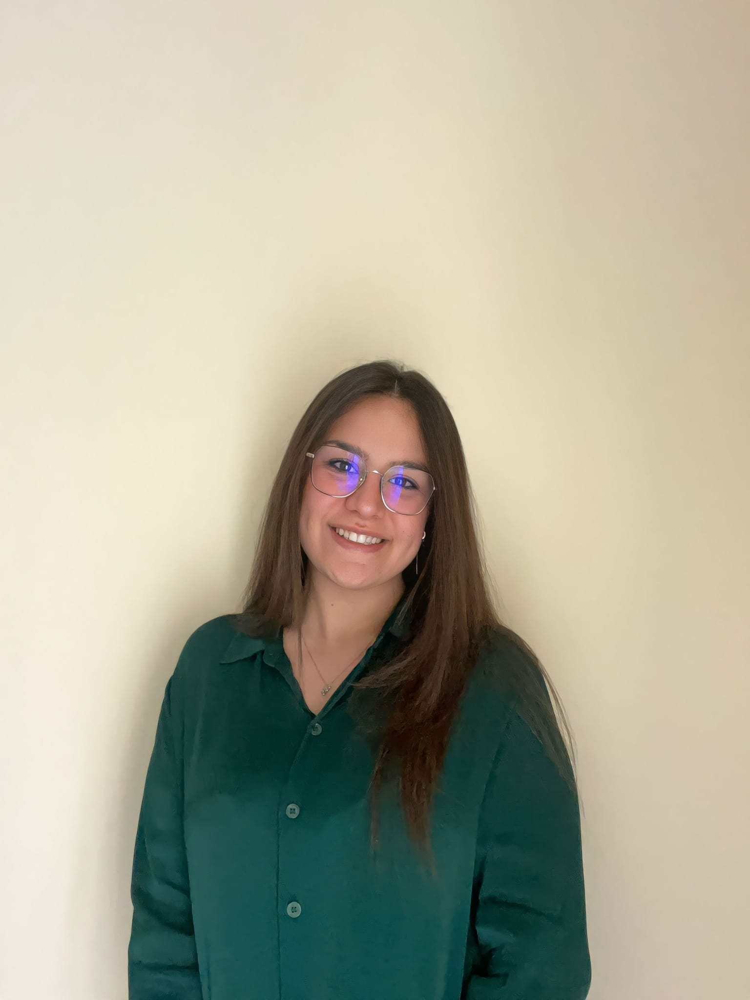
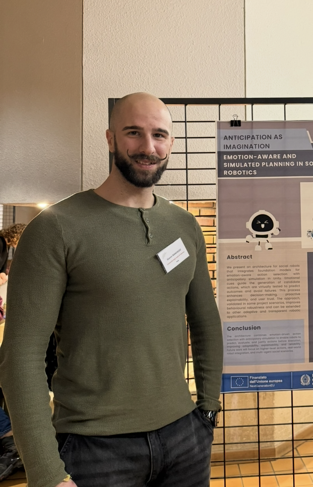

RESPONSABILI
Responsabili del laboratorio
Guidano il laboratorio e definiscono la visione scientifica e organizzativa.
Valeria Seidita
Responsabile del laboratorioIngegneria del software e robotica sociale per la progettazione e la validazione di scenari di ricerca.
Antonio Chella
Responsabile del laboratorioRobotica cognitiva, architetture sociali e linee di ricerca del laboratorio.
DOTTORANDI
Dottorandi
Lavorano su prototipazione, sperimentazione e integrazione software.

Maria Chiara Callari
DottorandaProgetti di ricerca, prototipazione e sperimentazione su sistemi robotici sociali.

Gianni Randazzo
DottorandoSistemi mobili, integrazione software e test su piattaforme robotiche del laboratorio.
BORSISTI
Borsisti
Supportano ricerca, documentazione e attività di laboratorio.
Lucrezia Mosca
BorsistiSupporto alla ricerca, documentazione e attività di laboratorio.
COLLABORATORI
Collaboratori del laboratorio
Persone che hanno collaborato con RoSE Labs in progetti, attività di ricerca e sviluppo.
Ricerca
Linee di ricerca
Le principali attività scientifiche del gruppo.
- Human-Robot Interaction e robotica sociale
- Sistemi intelligenti e software engineering
- Digital human, AI e avatar
- XR e ambienti immersivi
- Robotica etica e decision making
- Didattica, prototipazione e trasferimento tecnologico